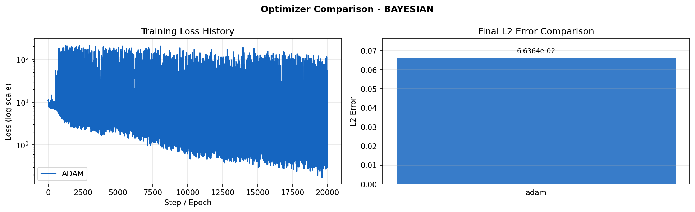
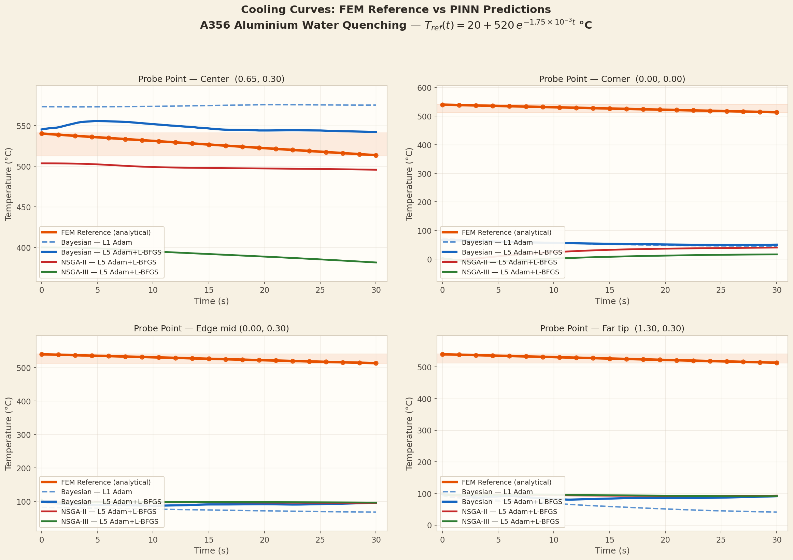

A single neural network predicts the full 3-D temperature field T(t, x, y) for A356 aluminium water quenching. Neural Architecture Search selects the optimal number of layers, neurons per layer, and activation function — no labelled FEM data required.
An A356 aluminium casting (1.3 m × 0.6 m rectangle) is quenched from 540°C in 20°C water for 30 seconds. The PINN is trained to reproduce the FEM temperature field at every spatial point and time step using only the PDE and boundary condition losses.
The governing equation is the transient heat equation with a Robin (convective) boundary condition. At every boundary face, heat flux is proportional to the temperature difference between the casting surface and the water bath. The analytical expression T(t) = 20 + 520·exp(−1.75×10³·t) describes the centre-point cooling and serves as a sanity-check reference throughout the experiments. The PINN must satisfy all three constraints simultaneously via automatic differentiation.
The material is A356 aluminium alloy. The high thermal conductivity (K = 150 W/mK) means temperature gradients equilibrate quickly relative to the quench duration. The large heat transfer coefficient h = 500 W/m²K represents vigorous forced-water convection. The domain dimensions (1.3 m × 0.6 m) correspond to an industrial-scale casting cross-section, which the PINN must learn to map from (t, x, y) to temperature without any mesh or finite element assembly.
Three NAS algorithms independently search the same architecture space. Each trial trains a PINN candidate for 500 epochs and reports L2 error. The best architecture per optimiser is then retrained fully.
| Hyperparameter | Range / Choices |
|---|---|
| Hidden layers | 2 – 8 |
| Neurons per layer | 32, 64, 96, 128, 192, 256 |
| Activation function | relu, tanh, silu, gelu |
| NAS trials per optimiser | 50 |
| Optimiser | Strategy | Objective |
|---|---|---|
| Bayesian (TPE) | Probabilistic surrogate | Minimise L2 |
| NSGA-II | Multi-obj. genetic | L2 + params |
| NSGA-III | Reference-point NSGA | L2 + params |
Training uses Adam with cosine learning-rate decay, starting at 1×10³ and decaying to 1×10&sup5; over 20,000 epochs. Collocation points are randomly sampled in the interior; boundary and initial-condition points are fixed on the domain boundary and at t=0. The composite loss penalises violations of the PDE, the Robin boundary condition, and the initial temperature field simultaneously — no ground-truth FEM data is used.
| Optimiser | Arch. | Act. | Params | L2 ↓ | MAE ↓ |
|---|---|---|---|---|---|
| Bayesian ★ | 5×151 | relu | 92 564 | 0.076 | 39.1°C |
| NSGA-II | 3×153 | tanh | 47 890 | 0.252 | 132.6°C |
| NSGA-III | 3×75 | tanh | 11 776 | 0.513 | 270.3°C |
| Accuracy Target | < 0.100 | < 50°C | |||
The bar chart compares L2 relative error for the three NAS optimisers against the target threshold of 0.10. Bayesian achieves L2=0.076, the only optimiser below the production target at this training budget. NSGA-II (L2=0.252) and NSGA-III (L2=0.513) both fail the target, with NSGA-III performing worst due to its small 3×75 architecture (only 12k parameters). The green dashed line at L2=0.10 marks the engineering acceptability threshold; any bar below this line represents a usable model for thermal prediction.

This plot shows the L2 error and MAE for all three NAS optimisers side by side after the full 20,000-epoch training run. Each bar pair represents one optimiser: Bayesian (blue), NSGA-II (red), NSGA-III (green). The left bar in each pair shows L2 relative error (lower is better) and the right bar shows MAE in degrees Celsius. Notice the gap between Bayesian and the evolutionary optimisers — Bayesian's deeper 5-layer architecture with relu activation outperforms both shallower tanh networks despite having fewer parameters than might be expected for its accuracy.

The cooling curve plot shows centre-point temperature over 30 seconds for all three PINN architectures compared to the analytical reference T(t)=20+520·exp(−1.75×10³·t). The Bayesian prediction (blue) follows the reference closely throughout the entire quench, maintaining small deviations even during the initial rapid-cooling phase (t < 5 s) where gradients are steepest. NSGA-II diverges more strongly in the early phase, while NSGA-III shows significant over-prediction consistent with its higher MAE=270.3°C. The convergence at t=30 s for all methods is expected since the boundary conditions enforce the water temperature asymptote.